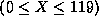

以上の段で各行への役の配置は完了である。この段では各行内のカードの入 れ換えを行うことで得点のアップを図る。
一つの行内のカードを自由に入れ換えるとすると 5! = 120 通りで、全て の場合について計算してもたいして時間はかからない。しかし、この入れ換 えを二つの行について組み合わせると 120x120 = 14400 であり、行 内の入れ換えを複数行組み合わせると指数的に計算コストが増えてしまう。 よってここでは、一行ずつ独立に入れ換えを行うこととし、得点が増える並 びが見付かればカード配置を更新して即次の行へ移ることを繰り返すように した。
この方法で最良の組合せがみつかる確証は無いが、試した結果を見ると割と 良い結果が出ているようである。複数行まとめて入れ換えを行うアルゴリズ ムと実験的に比較検討してみるのが良いかも知れない。(でも、そこまで暇で もない)
なお、行内の入れ換えでは各行の役の得点は変わらないので比較用の得点計 算は列方向のみ行っている。斜め方向の得点は次段で考慮するのでこの段で は考慮しない。
この段では総当たり的な探索を行っているため比較的時間がかかる。このた め、途中経過を順次ストリームに出力して行くことにした。
手頃なサイズでなので、５つのメンバを持つリストのアイテムを入れ換える アルゴリズムを紹介しておく。
%% %% Pair etc. ( Try and Check ) %% :- module solitaire_pairtry. % 5 つのメンバーを持つリストのアイテムを入れ換える % X=0 で入れ換え無し。X<120 try_shuffle(X, [I1,I2,I3,I4,I5], O):- true | X1 := X /24, R1 := X mod 24, X2 := R1 / 6, R2 := R1 mod 6, X3 := R2 / 2, X4 := R2 mod 2, list_getnth(X1, [4,3,2,1,0], K1, L1), list_getnth(X2, L1, K2, L2), list_getnth(X3, L2, K3, L3), list_getnth(X4, L3, K4, [K5]), solitaire_sort:sort_r_key([item(K1,I1),item(K2,I2),item(K3,I3),item(K4,I4),item(K5,I5)], O).この述語では、まず入力された整数X

から、次式を満た すような整数 Xi を算出する。
次に Xi にしたがって、[4,3,2,1,0]のメンバを各アイテムに割り振る。そ して、それをキーとしてソートを行うことで 120 通りの入れ換えを実現して いる。
述語 list_getnth(N, List, NthItem, Rest)は List から N 番めのメ
ンバを取り出し NthItem にユニファイし残りリストを Rest にいれる述語で
ある。